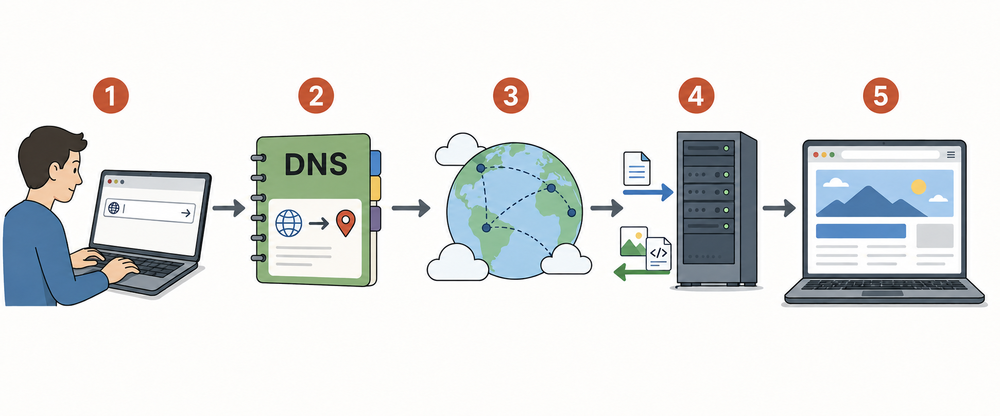

평가
참여 점수 (50 %)
- 출석 - 10%
- 과제 - 20%
- 프로젝트 결과물 - 20%
수행 점수 (50 %)
- 기말고사 - 30%
- 프로젝트 성과 평가 - 20%
※ 학교 규정에 따라 점수 총합 순위를 기준으로 학점 산정
평가 분할: 소프트웨어융합대학 계열 / 소프트웨어융합대학 계열 외
평가 비율: A+ ~ A0 40% · A+ ~ B0 90% · C+ ~ F 10%
웹서비스란 무엇인가?
기술 표준 정의 (W3C Web Services Architecture, 2004)
네트워크에서 상호운용 가능한 시스템 간 상호작용을 지원하도록 설계된 소프트웨어 시스템
“A Web service is a software system designed to support interoperable machine-to-machine interaction over a network.”
W3C: 팀 버너스리가 중심이 되어 1994년 설립된 웹 기술 국제 표준화 공동체
클라이언트-서버 모델
네트워크에서 서비스를 요청하는 클라이언트와 요청을 처리해 응답하는 서버가 역할을 나누는 구조
Browser · App
Client(클라이언트)
서비스를 이용하기 위해 서버에 요청을 보내고 응답을 받는 소프트웨어
Request(요청) →자원이나 처리를 요구하는 메시지
← Response(응답)처리 상태와 결과를 담은 메시지
Application
Server(서버)
클라이언트의 요청을 처리하고 결과를 응답하는 소프트웨어
Data
Database(데이터베이스)
서비스 데이터를 구조적으로 저장하고 조회·변경하는 시스템
- Network(네트워크)
- 컴퓨터와 장치가 데이터를 주고받도록 연결된 통신 환경
- Protocol(프로토콜)
- 네트워크 통신에서 데이터 교환 방법과 형식을 정한 규칙
- HTTP (HyperText Transfer Protocol)
- 웹에서 클라이언트와 서버가 요청과 응답을 주고받기 위한 프로토콜
Client(클라이언트)
네트워크를 통해 서버에 서비스나 자원을 요청하고 응답을 받아 사용하는 소프트웨어 또는 장치
웹서비스에서의 역할
- 서버에 HTTP 요청 전송
- 서버의 HTTP 응답 수신
- 받은 데이터와 자원을 사용하여 서비스 기능 제공
클라이언트의 종류
- Web Browser — Chrome, Edge, Safari, Firefox, Whale
- Mobile · Desktop App — Web API를 이용하는 응용 프로그램
- Other Program — 다른 서버, 자동화 도구, IoT 장치 등
 2026년 8월 웹브라우저 시장 점유율
2026년 8월 웹브라우저 시장 점유율
Server(서버)
네트워크를 통해 클라이언트의 요청을 받고, 요청을 처리한 결과를 응답하는 소프트웨어 또는 컴퓨터
HTTP Request(HTTP 요청) →
서버에 자원이나 처리를 요구하는 메시지
POST /login
← HTTP Response(HTTP 응답)
처리 상태와 결과를 클라이언트에 전달하는 메시지
Status Code(상태 코드)처리 결과를 나타내는 숫자200 · 404 · 500
1. 요청 수신·확인
URL·HTTP Method·입력 데이터·권한 확인
2. Business Logic(비즈니스 로직)
서비스의 기능과 처리 규칙을 코드로 구현한 부분
3. 응답 생성
처리 상태와 결과 데이터를 HTTP 응답으로 구성
조회·저장 →
← 데이터
Database
서비스 데이터 저장·조회·변경
로그인 예시로그인 요청 → 입력값 확인 → 인증 정보 조회·검증 → 상태 코드와 로그인 결과 응답
Database(데이터베이스)
서로 관련된 데이터를 구조화하여 저장하고 필요할 때 조회·변경할 수 있도록 구성한 데이터 집합
Server
서비스 처리에 필요한 데이터 요청
Query(쿼리) →
데이터의 조회나 변경을 DBMS에 요청하는 명령
SELECT · INSERT
← Result(결과)
요청에 따라 조회되거나 변경된 결과
데이터베이스를 생성하고 데이터를 조회·저장·변경하도록 관리하는 소프트웨어
Create생성
Read조회
Update수정
Delete삭제
저장·조회 →
← 데이터
Database
서비스가 종료되어도 데이터를 지속적으로 보관
idnamerole1Minastudent2Joonstudent
HTTP (Hypertext Transfer Protocol)
웹에서 클라이언트와 서버가 요청과 응답 메시지를 주고받기 위한 통신 규약
HTTP Request(요청) →
HTTP MethodGET서버에 요청하는 작업의 종류
/weather?city=Seoul
← HTTP Response(응답)
Status Code200 OK요청 처리 결과를 나타내는 세 자리 숫자
JSON (JavaScript Object Notation)데이터를 표현하고 교환하는 텍스트 형식{ "temp": 28, "status": "Sunny" }
Server(Web API)
HTTP 요청을 받아 기능을 수행하고 결과를 응답하는 인터페이스
주요 HTTP Method
GET조회
POST전달·처리/생성
PUT전체 생성·교체
PATCH일부 수정
DELETE삭제
Status Code 범주
2xx성공 · 200
3xx리다이렉션 · 302
4xx요청 오류 · 404
5xx서버 오류 · 500
전체 흐름 정리: www.naver.com 입력부터 화면 표시까지
DNS로 IP 주소 확인 → TCP 연결 → HTTP 요청·응답 → 브라우저 화면 구성

- URL 분석입력한 URL에서 도메인과 요청 경로 확인
- DNS 조회도메인 이름에 대응하는 서버의 IP 주소 확인
- TCP 연결IP 주소를 이용해 서버와 TCP 연결 수립
- HTTP 요청·응답브라우저가 HTTP 요청을 보내고 서버가 상태 코드와 데이터 응답
- 브라우저 렌더링HTML, CSS, JavaScript와 이미지 등을 해석하여 화면 구성
- URL
- 인터넷 자원의 위치와 접근 방법을 나타내는 주소
- DNS
- 도메인 이름을 IP 주소로 변환하는 시스템
- IP
- 네트워크에서 목적지를 식별하는 주소 체계
- TCP
- 데이터를 순서대로 안정적으로 전달하는 전송 방식
- HTTP
- 웹 자원을 요청하고 응답하기 위한 통신 규약
DNS 조회 예시 (2026.09.04)www.naver.com → 223.130.200.219 · 223.130.192.248 · 223.130.192.247 · 223.130.200.236
※ DNS 조회 결과는 시점과 네트워크 환경에 따라 변경 가능 · TCP 연결 단계는 HTTP/1.1·HTTP/2 기준
AI 시대의 웹서비스 개발
담당 영역은 전문화되어도 서비스 전체에 대한 이해와 AI 활용·검증 역량은 공통 요구
화면과 사용자 상호작용 구현
프론트엔드 개발자
HTML · CSS · JavaScript
TypeScript · React
요청 처리, 비즈니스 로직, Web API와 데이터 관리
백엔드 · 서버 개발자
Node.js · Express
PostgreSQL · Supabase
서비스 배포와 안정적인 운영
플랫폼·서비스 운영 개발자
Vercel · Git · GitHub
Monitoring · Security
AI 활용설계 · 코드 작성 · 테스트 · 디버깅 · 문서화 지원
개발자 책임요구사항 판단 · 결과 검증 · 보안 · 품질 · 최종 책임
VS Code
마이크로소프트가 개발한 무료 소스 코드 편집기
웹서비스 개발 작업 공간
- 소스 코드 작성과 프로젝트 파일 관리
- 통합 터미널을 통한 개발 명령 실행
- 확장 기능을 통한 언어·도구 지원
- Git·디버깅·AI 개발 도구 연동
파일 탐색기
코드 편집기
통합 터미널
 code.visualstudio.com
code.visualstudio.com
Git과 GitHub
Git으로 변경 이력을 관리하고 GitHub에서 저장소를 공유
 git-scm.com
git-scm.com
Git
소스 코드의 변경 이력을 기록하고 관리하는 분산 버전 관리 시스템
- 변경 내용 기록
- 이전 상태 확인과 복구
- 여러 개발자의 변경 내용 통합
Git 저장소 공유→
 github.com
github.com
GitHub
Git 저장소를 온라인에 저장하고 공유하는 개발 협업 플랫폼
- 원격 저장소 제공
- 코드 공유와 협업
- GitHub Pages를 통한 웹사이트 공개
GitHub CLI (gh)cli.github.com터미널에서 GitHub 로그인과 저장소 작업을 수행하는 공식 명령줄 도구